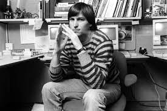
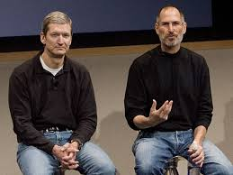
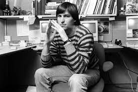
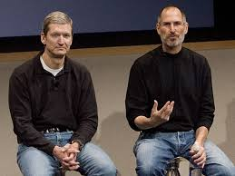

Steve Jobs tribute page
 



Steve Jobs over the years.
Steven Paul Jobs was an American business magnate, industrial designer, investor, and media proprietor. He was the chairman, chief executive officer (CEO), and co-founder of Apple Inc.; the chairman and majority shareholder of Pixar; a member of The Walt Disney Company's board of directors following its acquisition of Pixar; and the founder, chairman, and CEO of NeXT. Jobs is widely recognized as a pioneer of the personal computer revolution of the 1970s and 1980s, along with his early business partner and fellow Apple co-founder Steve Wozniak.
Jobs became CEO of Apple in 1997, following his company's acquisition of NeXT. He was largely responsible for helping revive Apple, which had been on the verge of bankruptcy. He worked closely with designer Jony Ive to develop a line of products that had larger cultural ramifications, beginning in 1997 with the "Think different" advertising campaign and leading to the iMac, iTunes, iTunes Store, Apple Store, iPod, iPhone, App Store, and the iPad. In 2001, the original Mac OS was replaced with the completely new Mac OS X (now known as macOS), based on NeXT's NeXTSTEP platform, giving the OS a modern Unix-based foundation for the first time. Jobs was diagnosed with a pancreatic neuroendocrine tumor in 2003. He died of respiratory arrest related to the tumor at age 56 on October 5, 2011.